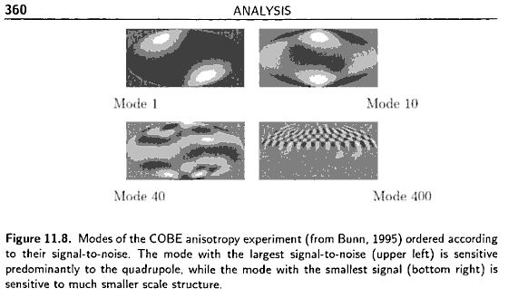
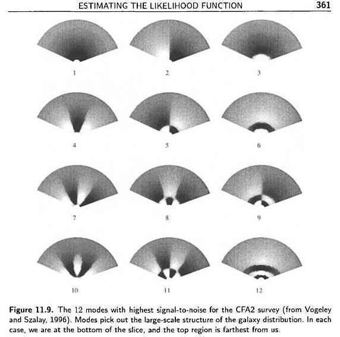

宇宙学中的统计方法【丁】
宇宙学中的统计方法笔记系列，第四篇：likelihood 函数的计算方法，包括如何剔除没用的模式和如何找到 likelihood 的极值。
系列文章目录：
在 likelihood 方程里面是需要求解矩阵的逆（可参考CMB 的 likelihood 方程），而实际观测中数据量又极大，所有直接求逆会实际计算很慢，因此一种有效的求解 likelihood function 的方法是很重要的。
Modern Cosmology 里面举了一个具体的例子。
Karhunen-Loeve Techniques
这种方法的主要想法是，丢掉那么严重被噪声污染的模。比如我们发现有用的模只有10%，那么计算逆矩阵的话，计算量就减少到了原来的1/1000。但是如何找出那些有用的模呢？
如果 covariance matrix 是对角的，我们之前在 【乙】 部分中提到对于对角化的 covariance matrix，我们可以得到 \(C_S/C_N\)，也就是信噪比。通过看信噪比的强弱，就可以知道那些模是有用的。可是真正的观测中，得到的数据的 covariance matrix 并不是对角化的，得到信噪比就比较困难。这正是 Karhunen-Loeve 方法所解决的问题。
现在假定我们有 \(N_p\) 个数据点，\(\Delta_i\)，与之前一样，这个数据点是由信号 \(s_i\) 和噪声 \(n_i\) 组成的。为了简单，我们假定信号和噪声是不关联的。
使用矩阵表达式，那么 covariance martrix 就可以写成
\[ {\bf C} \equiv \langle \Delta \Delta^{T} \rangle = {\bf C_S} + {\bf C_N} \]
Karhunen-Loeve technique 是利用一系列矩阵变换把 noise covariance matrix 写成单位阵，然后 signal covariance matrix 写成对角形式，这样就可以比较信号和噪声了，当然我们用的数据矩阵也应该做相应的变换。比如我们把数据矩阵转动
\[ {\bf \Delta}’ = {\bf R} {\bf \Delta} \]
那么相应的 covariance matrix 也就变成了
\[ {\bf C} = \langle ({\bf R \Delta}) ({\bf R \Delta}) \rangle ={\bf R C R^{T}} \]
如果 \({\bf C}’\) 是个对角化的形式，那就好办了。所以，Karhunen-Loeve technique 的操作过程应该是：
- 通过转动矩阵 \({\bf R_1} \) 把 \({\bf C_N}\) 对角化为 \({\bf C_N}”\) ；
- 通过矩阵 \({\bf R_2}\)把 \({\bf C_N}”\) 化为单位阵：\[ {\bf C_N}’ = {\bf R_2 R_1 C_N R_1^T R_2^T}\] 其实 \(\bf R_2\) 是个对角阵，所以 \({\bf R_2^T} = {\bf R_2} \) ；
- 通过转动矩阵 \({\bf R_3}\) 把进行过 \({\bf R_1}\) 和 \({\bf R_2}\) 操作的 \({\bf C_S}\) 对角化为 \({\bf C_S}’\) ：\[{\bf C_S}’ = {\bf R_3 R_2 R_1 C_S R_1^T R_2 R_3}\]。同时 \(\bf C_N’\) 也必须进行 \(\bf R_3\) 操作，但是由于实对称矩阵的对角化通过 unitary 的矩阵来实现的（\({\bf R_3^{-1} = {\bf R_3^T}}\)），所以实际上再对 \(\bf C_N’\) 进行 \(\bf R_3\) 操作并不改变 \(\bf C_N’\) 是单位阵的性质，因此这一步不需要任何计算；
- 对数据点进行相应的变换 \[ {\bf \Delta’} = ( {\bf R_3 R_2 R_1 } ){\bf \Delta} \]
这样变换之后，我们最终拿到的 covariance matrix 是
\begin{equation}
{\bf C}‘ \equiv \langle {\bf \Delta’\Delta’^T } \rangle = {\bf C_N’} + {\bf C_S’} = {\bf I} + {\bf C_S’}
\end{equation}
通过判断 \(\bf C_S’\) 的元素（只有对角元）与 1 的大小，可以判断某个模式是否应该舍弃。
Modern Cosmology P 356 有一个数据矩阵只有两个元素的例子。
Karhunen-Loeve 方法已经有了很重要的应用。下图是 Bunn 和 Bond 用 K L techniques 重分析 COBE 卫星数据的几个图（Modern Cosmology P360）

图中左上是 signal to noise (S/N) 最大的模式，而右下是 S/N 最小的模式。实际上左上角主要是 quadrupole 的贡献，右下角的图主要是小尺度观测的贡献。
下图是 K L techniques 用在 galaxy survey 上面的情况（Vogeley 和 Szalay，1996）。（Modern Cosmology P361）

上图中展示的是 12 个有最大 S/N 的模式，都是大尺度的模。也就是说 K L techniques 恰好吧 galaxy survey 中的大尺度的数据筛选出来了。
Karhunen-Loeve technique 的另外一个很重要的用途是进行自洽性分析。Modern Cosmology P360 给了一个 the Python experiment 的例子。由于数据点太多，不方便直接检查数据的自洽性。于是他们使用 Karhunen-Loeve technique 把大 S/N 的数据挑出来，然后看看是不是跟观测数据所做的基本的概率假定相符，比如这里数据应该是 Gaussian 的，但是 the Python experiment 小组 第一次所用的 noise covariance matrix 导致筛选出来的这些结果并不是 Gaussian 的，于是他们就用新的 noise covariance matrix 重新做了分析。（具体例子分析请翻阅 Modern Cosmology P360）
在实际的观测中，这种方法并不是万能的，因为首先我们必须现有一个预设的 signal covariance matrix \(\bf C_S\)，其次，这种方法在进行了上面的这么多的操作进行筛选数据点之后，还是需要按照原来的求解 likelihood 的方法来计算，也就是还是要求逆，虽然我们上面进行过了对角化，但是这只是一个特殊点进行的，也就是选择 \(\bf C_S\) 是所定的点，这样在其他点，这些矩阵并不是对角化的，计算还是比较复杂。
Optimal Quadratic Estimator
上面的 K L techniques 还是要硬算 likelihood 的，而 optimal quadratic estimator 是一种不需要去完整的求解全局的 likehood 的方法。
Optimal quadratic estimator 是类似于 Newton 切线法求方程的根的方法，因为实际上我们要求解的量只是 likelihood 极大的时候的参数值，所以我们只需要找到如下方程的根就可以了，
\[ \left.\frac{\partial \scr L}{\partial \lambda} \right| _ {\lambda = \bar \lambda}= 0 \]
按照 Newton-Raphson 方法的想法，需要选定一个初始的参数空间的位置 \(\lambda^{(0)}\)，因为对于多项式形式的函数这样的算法比较有优势，所以我们现在假定 likelihood 是 \(\bf C_S\) 和 \(\bf C_N\) 的 Gaussian 函数，那么我们对 likelihood 取 log 之后的式子就变成多项式形式了。这样我们把 \(\ln \scr L\) 在 \(\lambda^{(0)}\) 附近展开
\[
(\ln \mathscr L) _{,\lambda} (\lambda) = (\ln \mathscr L) _{,\lambda}(\lambda^{(0)}) + (\ln \mathscr L) _{,\lambda\lambda}(\lambda^{(0)}) ( \lambda – \lambda^{(0)}) \]
只取前面的两项，并且把极值点真正的参数值 \(\hat \lambda\)带入，有 \({\ln\scr L}_{,\lambda} = 0\)，即
\[ \hat\lambda \approx \lambda^{(0)} – \frac{ (\ln \scr L) _{,\lambda}(\lambda^{(0)}) }{(\ln \scr L) _{,\lambda\lambda}(\lambda^{(0)})} \]
实际上上式中所谓的 \(\hat \lambda\) 只是一个近似的准确值，因为我们只取了 Taylor 展开的前两项。但是通过迭代的方法，我们就可以无限趋近于真正的极值。
这种方法中出现了 likelihood 的导数。可以用 CMB 的情况作为例子来看看如何计算。对 CMB 来说
\[ (\ln \mathscr L) _{,\lambda} = \frac{\partial}{\partial \lambda}\left[ -\frac{1}{2}\ln(\det C) – \frac{1}{2} \Delta C^{-1}\Delta \right]\]
利用矩阵的一些计算技巧，\(\ln \det(C) = \mathrm{Tr} \ln(C) \) 和 \( C_{,\lambda}^{-1} = – C^{-1} C _ {,\lambda} C^{-1} \)
\begin{eqnarray}
(\ln \mathscr L)_{,\lambda} &=& \frac{\partial}{\partial \lambda}\left[ -\frac{1}{2}\ln(\det C) – \frac{1}{2} \Delta C^{-1}\Delta \right] \nonumber \\
&=& -\frac{1}{2}\frac{\partial}{\partial \lambda} \ln(\det C) – \frac{1}{2} \Delta \frac{\partial}{\partial \lambda} C^{-1} \Delta \nonumber \\
&=& -\frac{1}{2} \mathrm{Tr} [C^{-1} C _ {,\lambda}] + \frac{1}{2}\Delta C^{-1}C _ {,\lambda}C^{-1} \Delta
\end{eqnarray}
重复使用上述技巧，可以得出二阶导数
\[ (\ln \mathscr L) _ {,\lambda\lambda} = -\Delta C^{-1}C _ {,\lambda} C^{-1} C _ {,\lambda} C^{-1}\Delta + \frac{1}{2} \mathrm{Tr} [ C^{-1} C _ {,\lambda} C^{-1} C _ {,\lambda} ] +\frac{1}{2} ( \Delta C^{-1} C _ {,\lambda\lambda} C^{-1} \Delta – \mathrm {Tr} [ C^{-1} C _ {,\lambda\lambda} ] ) \]
为了方便，定义一个 curvature，
\[ \mathscr F = – \frac{\partial^2 \ln \mathscr L}{\partial \lambda^2} \]
并且
\[ F _ {,\lambda\lambda} \equiv \langle \mathscr F \rangle = \frac 1 2 \mathrm{Tr} [ C _ {,\lambda} C^{-1} C _ {,\lambda} C^{-1} ] \]
于是
\begin{equation}
\hat\lambda = \lambda^{(0)} + F^{-1} _ {\lambda\lambda} \frac{\Delta C^{-1}C _ {,\lambda} C^{-1} \Delta – \mathrm {Tr} [ C^{-1} C _ {,\lambda} ] }{ 2 }
\end{equation}
从这个 CMB 的例子可以更好的了解具体如何计算。按照我们一开始的想法，只要我们把按照这个过程多进行几次迭代就可以了。
但是上面所讲仅仅是一个参数的情况，那么对于多个参数的情况呢？
多参数的情况就变成了
\begin{equation}
\hat \lambda _ \alpha^{(0)} + F^{-1} _ {\alpha\beta} \frac{ \Delta C^{-1} C _ {,\beta} C^{-1} \Delta – \mathrm{Tr} [ C^{-1} C _ {,\beta} ] }{ 2 }
\end{equation}
其中原来的 curvature 变成了 Fisher matrix
\[ F _ {\alpha\beta} \equiv \langle – \frac{ \partial^2 (\ln \mathscr L) }{ \partial \lambda _ {\alpha} \partial \lambda _ {\beta} } \rangle = \frac12\mathrm{Tr}[ C _ {,\alpha} C^{-1} C _ {,\beta} C^{-1} ] \]
到此为止，这种方法告诉我们其实我们不需要曲完整的求解整个参数空间中的 likelihood function，而只需要估计一个参数空间的点，然后通过迭代的方法就可以了。这样只需要求解一个局域的参数空间而已。
下一步就是要得到参数误差。其实我们已经假定了数据是 Gaussian 的，所以只需要按照 Gaussian 分布来给定误差就可以了。
因此 variance of estimator 就是
\[ \langle (\hat\lambda _ \alpha – \bar \lambda _ \alpha)(\hat \lambda _ \beta – \bar \lambda _ \beta) \rangle = (F^{-1}) _ {\alpha\beta} \]
Modern Cosmology P 367 中有关于为什么我们这里求解的 \(\hat\lambda\) 的期望值正好等于真正的理论值 \(\bar \lambda\) 的证明。这个证明从一方面说明了我们按照 Gaussian 分布给出结果的误差是正确的。
Fisher matrix 变得非常重要，因为 Fisher matrix 不仅仅要用来计算参数空间极值，还直接决定了我们的数据拟合结果的好坏。下一篇 post 我们就来看看 Fisher matrix 的计算方法。
本文没有 flag。

最近评论